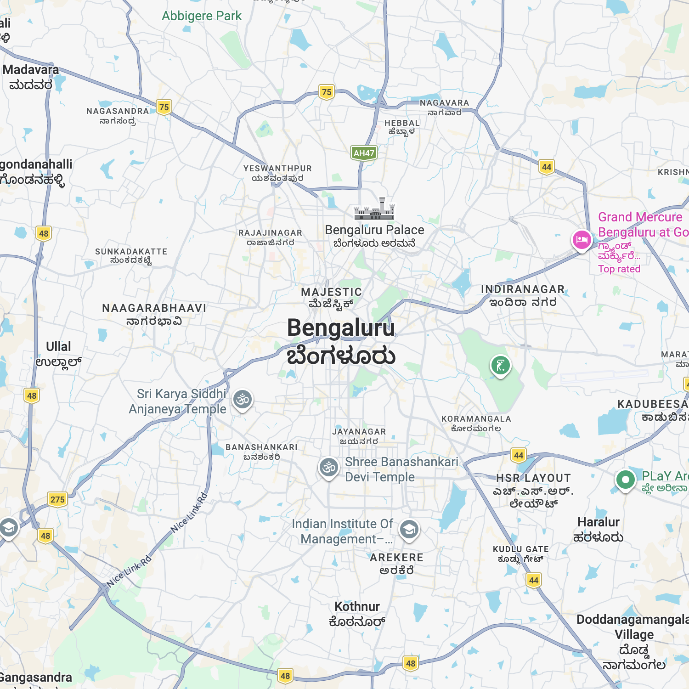

the
power
to
fix
your
city.
Don't just walk past the problem. SynCity connects your neighborhood directly to municipal action. Reporting a civic issue is now as fast as taking a selfie.

Watch your report
come to life.
Snap.
Spot a problem? Just take a photo. Our engine captures the coordinates and context instantly.
Verify.
AI confirms the issue in real-time. We deduplicate reports so the city stays focused on fixing.
Fixed.
Verified reports are sent to the ward. Watch as your contribution turns from reported to fixed.
From Reported to Restored.
Our AI analyzes and marks issues according to urgency, ensuring that critical ward hazards are prioritized for immediate municipal action.


Stand tall in your
neighborhood.
Every report is a step toward the #1 spot. Earn reputation, unlock badges, and become a ward legend.
Koramangala Ward
Monthly Champions • May 2026
Daily Fix
Streaks.
The legends of Bengaluru don't just report once. They maintain the fire. High streaks unlock exclusive ward perks and 2x XP multipliers.
Not just a queue.
A commitment.
We've integrated directly with ward-level dashboards. Your reports are legally verified by AI and sent straight to the relevant municipal engineer. No middleman, no delays.
"SynCity provides us with the high-fidelity data we need to prioritize ward maintenance effectively."